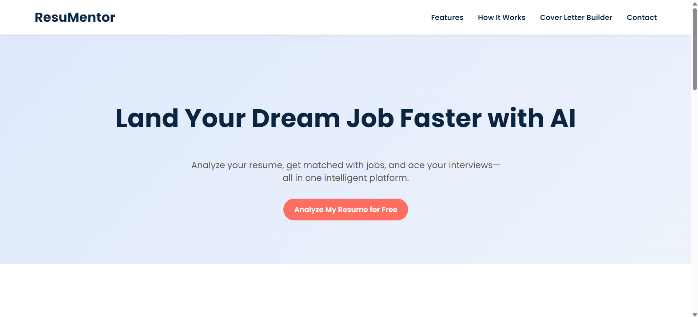

My Projects
ResuMentor
A full-stack web application designed to automate and personalize the job application process.
Portfolio Website
A responsive portfolio website built with HTML, CSS, and JavaScript. Features a clean, minimalist design with smooth animations.
GreenGlow - Plant Guide and Disease Detection
Python-based data analysis project using pandas and matplotlib for data visualization and insights.
Sortify - Sorting Algorithm Visualizer
Interactive web application that visualizes various sorting algorithms in real-time.
IntelVids - YouTube Video Summarizer
AI-powered video summarization platform that automatically extracts and condenses YouTube video content into concise bullet points.
ChronoMind - Daily Journal Summarizer
A Streamlit-based web application that helps you maintain a daily journal and automatically generates weekly summaries using AI.
Twitter Sentiment Analysis
Web application that analyzes the sentiment of tweets using TextBlob by fetching from Twitter API.
Movie Recommendation System
A machine learning-based recommendation system that suggests movies similar to the user's favorite choice based on genres, keywords, cast, tagline, and directors.
Multiple Disease Prediction System
Designed a system that allow user to select disease and predicts the health condition based on symptoms using Machine Learning.
Web Based Dictionary Application
Web based Dictionary application that allows you to search for the meaning of words, phonetic, definition, pronunciation, synonyms, and examples using Dictionary API.